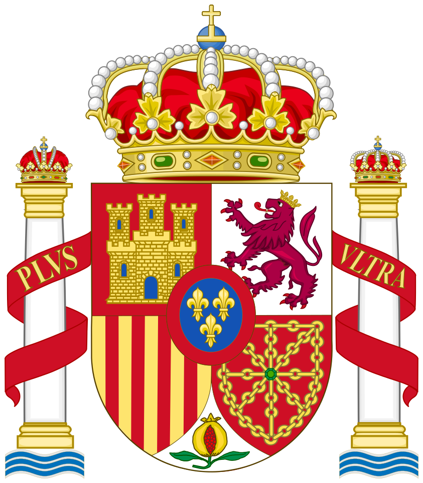

← 国際博覧会
スペイン
CULTURE / SPAIN
ヨーロッパ · イベリア半島
スペイン
街と祭りをめぐる旅
歴史ある街並み、地域ごとに受け継がれる祭り、そして個性豊かな郷土料理。スペイン各地の文化を、風景と食卓から紹介します。
国旗 · NATIONAL FLAG

国章 · COAT OF ARMS
Heralder / Wikimedia Commons
CC BY-SA 3.0
01
HOLIDAYS
祝日
↗
SPAIN / HOLIDAYS
02
SIGHTS
観光地
↗
SPAIN / SIGHTS
03
CUISINE
料理
↗
SPAIN / CUISINE
 スペイン
スペイン